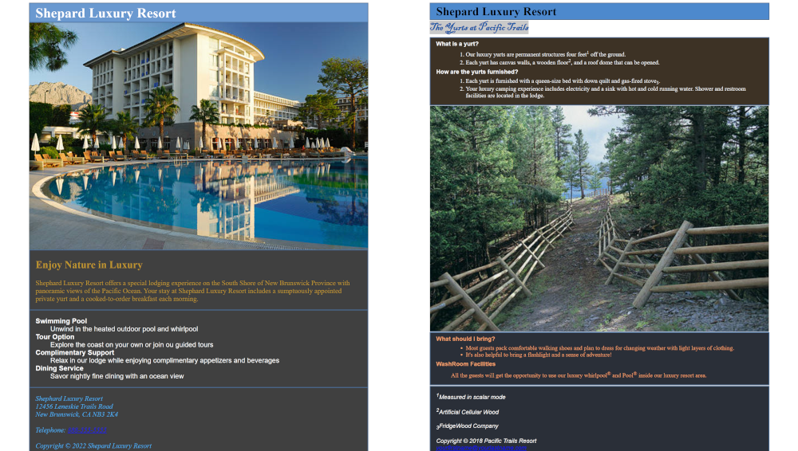

On this page I will talk about the Labs I did in my program at Vanier college.
Lab 1
For the first lab I used the basic html element for creating a text website of two pages for a Resort with one image by page.
- I used description list element (<dl></dl>) for one page and unordered list with ordered list for the other page.
- I also used the navigation element (<nav></nav>) to be able to move between the two pages.
- I also used the image element (<img>) for the pictures.
You can find the pdf there: Lab1.pdf
Click on the thumbnail below to view the corresponding page.


Lab 2
For the second lab, using the first lab as a base, I needed to add an external css to add colors, a viewport and margin to center the page.
Also removed the navigation as per the pdf.
- I applied the colors with the CSS selector, to select the corresponding element and the attribute color.
- I also applied the meta viewport to both pages.
- I also applied the width of the body element (<body></body>) to 85% and the CSS margin-left and margin-right to auto to have the body element centered.
You can find the pdf there: Lab2.pdf
Click on the thumbnail below to view the corresponding page.

Lab 3
For the third lab, using the second lab as a base, I needed to add image map with multiples links and add background image.
I also added back to navigation for the home page as per the pdf.
- I added backgound image to both pages.
- I also added a image to the top right of the pages.
- I also applied a image map element (<map>) to the top right image with link for the two clickable area by image.
The home page one is halfen in two. While the trails page one is about the toad or the forest that are clickable.
I have been having trouble for background image especially the trails page.
You can find the pdf there: Lab_3.pdf
Click on the thumbnail below to view the corresponding page.


Lab 4
For the fourth lab, using the third lab as a base, I needed to add a table.
I also removed the backgound image as per the pdf.
- I used the table element (<table>) to create the table.
- I also used the table row element (<td>) for creating every row.
- I also used the rowspan attribute to merge multiple rows together.
- I also used the colspan attribute to merge multiple row together.
- I also used the span element (<span>) with a class attribute to assign the respective background colors with CSS.
You can find the pdf there: Lab_4.pdf
Click on the thumbnail below to view the corresponding page.